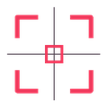

حوّل فكرتك إلى تصميم
اختر الأداة وابدأ خلال ثوانٍ

أدوات سريعة
كل ما تحتاجه في مكان واحدإعدادات جاهزة لكل مدرس أو عميل، ترجع لها بضغطة.
تصميم الأسبوع
انشر تصميمك المصنوع بالبلاجن على فيسبوك بهاشتاج #بلاجن_قيم. كل أسبوع محمد قيم بيختار أفضل تصميم لعرضه هنا باسم صاحبه.
جاري تحميل تصميم الأسبوع…
حساباتي ورقم التواصل
01200107845
QAYEM · 1.24.52
Style Studio
جهّز برومبت الشخص والملابس، وانسخه لأداة الصور اللي بتستخدمها.
أرفق صورتين فقط مع البرومبت: ١ — صورة الشخص للحفاظ على ملامحه، ثم ٢ — صورة الملابس لاستخدام ملابسها فقط.
الكادر 3:4 ثابت. الخلفية وإضافات الإضاءة تتغير حسب النوع؛ التلاشي السفلي يظهر مع السماء السينمائية فقط.
الطبيعي هو نفس حجم وكادر النسخة المعتمدة. القرب والبعد يغيروا حجم الشخص والكادر، من غير تغيير زاوية الكاميرا أو الحركة.
الافتراضي مستوى العين. المنظور يحدد موضع الكاميرا فقط، من غير ما يغير وقفة الشخص أو اتجاه نظره.
لو كتبت زاوية بنفسك، هتتستخدم بدل الاختيار الجاهز.
يمين وشمال هنا يقصد بيهم يمين الشخص وشماله، مش الكادر.
الافتراضي هو نفس تعبير صورة الشخص الأصلية.
لو كتبت حركة بنفسك، هتتستخدم بدل الاختيار الجاهز.
الافتراضي أبيض سادة. لو وصفت خلفية بنفسك، هتستخدم بدل الاختيار الجاهز، والإضاءة هتتأثر بألوانها.
السماء ثلثين الكادر والأرض ثلثه. ضوء الشمس خلف الرقبة ومبانٍ على الجانبين. تلاشي أقوى يبدأ من أسفل البطن ويخفي أسفل الملابس داخل الأرضية؛ الوجه واليدين يفضلوا واضحين. التأثير لخلفية السماء فقط.
اكتب مجال الشخص أو فكرة الديكور؛ البرومبت هيكيّف البراويز والعناصر معاها مع الحفاظ على لون الغرفة. لو سيبتها فاضية، هتستخدم ديكور الغرفة المعتاد. التركيز يفضل على الشخص والديكور أنعم وأهدى في الخلفية.
نفس الشخص · لوكات متعددة
برومبت لصورة واحدة فيها نسخ من نفس الشخص، وكل نسخة بحركة ولوك مختلف.
أرفق صورتين فقط: ١ — صورة الشخص لكل النسخ، ثم ٢ — صورة اللبس. النسخة الأولى تلبس نفس القطعة المرفقة بتفاصيلها؛ الباقي تنويعات من نفس عائلة ألوانها.
البلاجين بيقترح أنواع لبس وحركات من غير ما يشوف الصور. أداة الصور تحدد الدرجات الفعلية من الصورة الثانية، أو تقدر تكتب لون اللبس بنفسك.
البعد للمشهد كله. الطبيعي هو نفس البرومبت المعتمد؛ القرب يبرز الوجوه، والبعد يوسع الخلفية، مع الحفاظ على العدد والتوزيع.
السماء ثلثين الكادر والأرض ثلثه. ضوء الشمس خلف الرقبة ومبانٍ على الجانبين. تلاشي أقوى يبدأ من أسفل البطن ويخفي أسفل الملابس داخل الأرضية؛ الوجه واليدين يفضلوا واضحين. التأثير لخلفية السماء فقط.
اكتب مجال الشخص أو فكرة الديكور؛ البرومبت هيكيّف البراويز والعناصر معاها مع الحفاظ على لون الغرفة. لو سيبتها فاضية، هتستخدم ديكور الغرفة المعتاد. التركيز يفضل على الشخص والديكور أنعم وأهدى في الخلفية.
الاختيارات اللي عدّلتها يدويًا هتفضل ثابتة. تقدر ترجّع نسخة للاقتراحات التلقائية من داخلها.
صور مصغرة سريالية
مشهد غريب بعمق سينمائي، والشخص هو محور الصورة.
١ — صورة الشخص للحفاظ على ملامحه، ثم ٢ — صورة الملابس اللي هيرتديها.
أفقي 16:9 · 1920×1080. الشخص كبير وقريب، وتغيير مكانه لا يغيّر حجمه. البرومبت يجهّز الصورة بدون كتابة أو لوجوهات.
يمين ويسار بالنسبة للمشاهد. حجم الرأس والكتفين ثابت، مع مساحة للمشهد حول الشخص.
لون مسيطر للمشهد، لون متباين للعنصر الرئيسي، ولمسة إضاءة مساعدة. لون البشرة يفضل طبيعي.
تعبير واضح حتى في الصورة المصغرة، مع الحفاظ على ملامح الشخص.
حدد العنصر، مكانه، حجمه، وهل الشخص بيتفاعل معاه.
حدد لكل عنصر حجمه ومكانه وقربه. العناصر توجّه العين للشخص، من غير ما تغطي الوش.
نعم تغيّر لون الملابس فقط مع الحفاظ على قصّتها وخامتها وتفاصيلها. لا تحافظ على ألوان الصورة الثانية وتنسّق الخلفية والإضاءة حواليها.
تصميم لمدرّس
اختار نوع التصميم الأول، وبعده المادة وباقي التفاصيل علشان نجهّز البرومبت.
ابدأ من جديد بإعدادات النوع المفتوح فقط.
كل وجه من مرجعه الخاص، وصورة المدرّس أولًا دائمًا. النظارة تظهر فقط لو موجودة في مرجع نفس الشخص أو طلبتها له. ترتيب المرفقات هيظهر تحت.
البلاجين يجهّز البرومبت. اختيار المقاس يحدد نسبة أبعاد التصميم.
اختار النوع علشان تظهر مادة المدرّس والخيارات الخاصة بيه.
تصاميم الأطباء والعيادات
1.24.31 · Doctors and clinics mode
اختار نوع التصميم الأول، وبعده التخصص وباقي التفاصيل علشان نجهّز البرومبت.
كل وجه من مرجعه الخاص، وصورة الدكتور أولًا دائمًا. النظارة تظهر فقط لو موجودة في مرجع نفس الشخص أو طلبتها له. ترتيب المرفقات هيظهر تحت.
البلاجين يجهّز البرومبت. اختيار المقاس يحدد نسبة أبعاد التصميم.
اختار النوع علشان تظهر تخصص الدكتور والخيارات الخاصة بيه.
الريتتش
اختار أكشن وشغّله على الصورة المفتوحة في Photoshop.
٧٢ اختيار للريتتش والألوان والحدة، بنفس خطوات ملف الأكشن الأصلي.
بعض الخيارات بتفتح إعدادات أو بتجهّز لايرات وماسكات تكملها بالفرشاة. اختار لاير الصورة المناسب قبل التشغيل، واتبع رسائل الأكشن.
الافتراضي: الأكشن يشتغل على نفس الملف المفتوح. فعّل الاختيار فقط لو عاوز نسخة مستقلة في مشروع جديد؛ النسخة تحتفظ باللايرات.